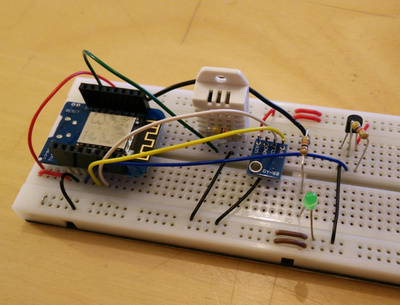
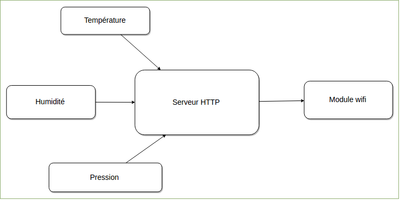
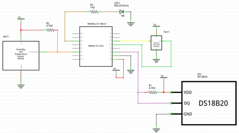

Je me suis lancé dans ce projet, car je voulais ma station météo pour enregistrer mes données météo. Après avoir halluciné en voyant les tarifs sur le marché (plus de 150€ les modèles pour lesquels on peut récupérer les données sur ordinateur), j’ai pris la décision de faire ma propre station météo pour 10€.

Tout le projet est ici: https://github.com/landru29/esp8266-meteo
Le principe
Mesures physiques
La station météo mesure:
- la température (DS18B20)
- le taux d’humidité (DHT22)
- la pression (BMP180)
Fonctionnement
La station doit pouvoir se connecter au WiFi du domicile. Elle expose ensuite un petit server HTTP qui, à chaque requête de type GET renvoie l’ensemble des mesures au format JSON.

Concrêtement, à la mise en route de la station, elle se connecte sur le WiFi (par WPS). Ensuite, il suffit d’aller sur la page http://meteo-by-noopy/, et vous aurez, en retour:
{
"bmp-temperature": "20.30"
"dht-temperature": "20.40"
"ds-temperature": "20.36"
"bmp-pressure": "10240"
"dht-humidity": "19.60"
"dht-heat-index": "22.10"
}
Pour info, le host “meteo-by-noopy” est inscrit en dur dans le programme que l’on transfère dans le microcontrolleur. cette adresse est, évidement, atteignable que depuis le réseau de votre domicile.
Un petit mot sur le WPS
C’est un mode de connexion de certains périphériques à votre box internet. Votre box et le périphérique négocient une connexion sécurisée. En pratique, vous mettez sous tension la station météo, et lorsque la led émet des doubles flashs, appuyez sur le bouton “WPS” qui se trouve sur votre box. la connection se fait.
A la prochaine mise sous tension de la station météo, cette dernière se connectera toute seule à votre box (elle a gardée en mémoire la clef de connexion).
https://fr.wikipedia.org/wiki/Wi-FiProtectedSetup
Les composants
- Wemos D1 Mini (microcontrolleur avec module WiFi): 2,50€
- DHT22 (capteur d’humidité + température): 2,50€
- BMP180 (capteur de pression + température): 2,50€
- DS18B20 (capteur de température précis): 2€ le lot de 5
- 2 résistances de 4.7k coûtant quelques centimes
Les prix indiqués sont ceux que l’on retrouve sur le site https://fr.aliexpress.com/ (site chinois avec des tarifs chinois).
Les capteurs
Ils sont tous les trois numériques. C’est plus pratique, car on n’a pas besoin de se soucier de la chaîne d’acquisition analogique (amplification + conversion numérique). Tout est dans les composants. la données est transportée par un ou deux fils. Vous pouvez retrouver facilement les datasheets sur le net.
Certains, comme le DHT22 et le DS18B20, on besoin d’une résistance (4.7k, spécifié dans les datasheets) de pull-up entre le fil de data et le 5V.
Le microcontrolleur
C’est le fameux Wemos D1 mini (qui embarque l’ESP8266). On en a déjà parlé dans la page de l’IOT (Internet Of Things).
Ce microcontrolleur se programme avec les outils Arduino (https://www.arduino.cc/). Pour ceux qui ne connaissent pas, vous avez juste à télécharger et installer le soft (disponible gratuitement sur le site), écrire votre programme (en c++), et ensuite, après avoir connecté le microcontrolleur à votre ordinateur, via USB, vous transférez votre programme.
Le programme est disponible sur mon github: https://github.com/landru29/esp8266-meteo/tree/master/meteo
Le schéma électronique
Le schéma a été réalisé avec Fritzing (http://fritzing.org/home/ version 0.9.3)
